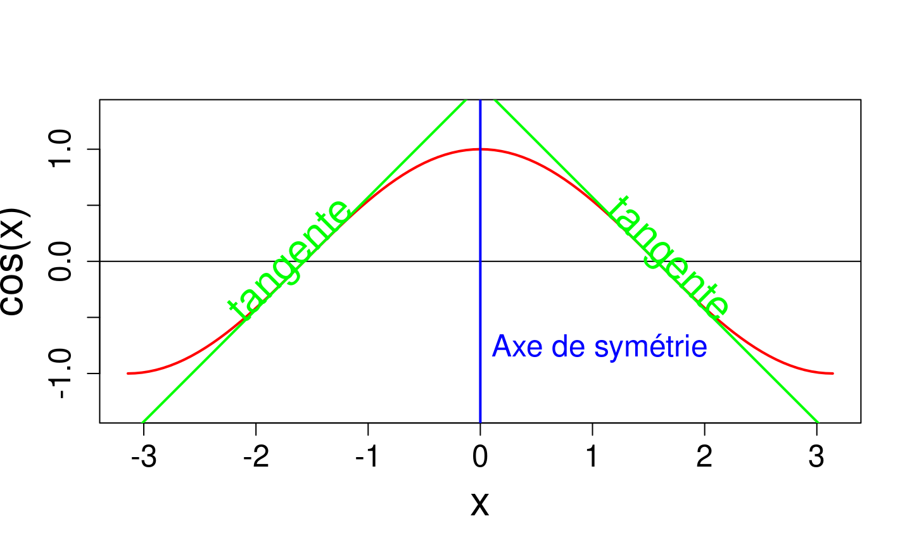
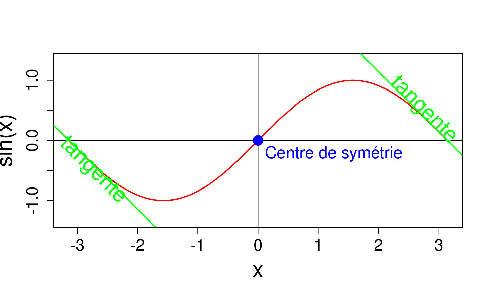
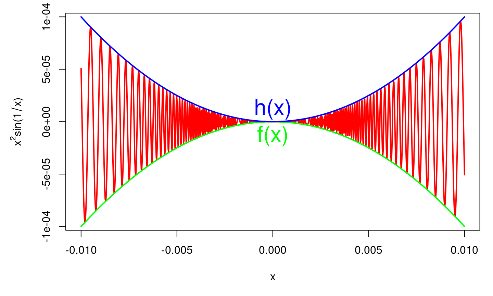

14 octobre 2019
Introduction
Plan du cours
- Domaine d’étude
- Limites, continuité, dérivabilité et variations
- Comparaison locale de fonction
- Etude locale des fonctions
- Retour sur la limite
Objectifs
- Savoir étudier les variations d’une fonctions
- Résoudre problèmes d’optimisation
- Savoir trier des ordres de grandeur
- Approfondir la notion de limite
Domaine d’étude d’une fonction: parité
En général une fonction \(f\) est donnée par son expression \(f(x)\). Pour se ramener à une application il faut détérminer le domaine de définition \(D_f\) de \(f\), c’est à dire l’ensemble des \(x\) pour lesquels l’expression \(f(x)\) a du sens.
- \(D_f\) est stable par passage à l’opposé, c’est à dire que si \(x \in D_f\), alors \(-x \in D_f\).
- \(\forall x \in D_f f(-x) = f(x)\) (resp. \(\forall x \in D_f f(-x) = -f(x)\))
Exemples
- \(\cos(x)\) est paire, \(\sin(x)\) est impaire.
Domaine d’étude d’une fonction: parité
- Si \(f\) est paire, le graphe \(C_f\) de \(f\) est symétrique par rapport à l’axe \((Oy)\). Si \(f\) est dérivable, sa dérivée est impaire.
- Si \(f\) est impaire, le graphe \(C_f\) de \(f\) est symétrique par rapport au point \((0, 0)\). De plus, si \(0 \in D_f\), alors \(f(0) = 0\). Si \(f\) est dérivable, sa dérivée est paire.
Fonction paire

Fonction impaire

Fonction nulle
Une fonction est dite identiquement nulle sur un ensemble \(I\) lorsque \[\forall x \in I, f(x) = 0\]
Périodicité
- \(D_f\) est stable par translation, c’est à dire que si \(x \in D_f\), alors \(x + T \in D_f\).
- \(\forall x \in D_f f(x + T) = f(x)\)
En général, on utilise la périodicité pour n’étudier \(f\) que sur une période et la parité pour ne l’étudier que sur une moitité du domaine de définition (par exemple \(D_f \cap \mathbb{R}_+\)).
Fonction périodique
Exercices
Donner le domaine de définition et les éventuelles (im)parité/périodicité des fonctions suivantes:
- \(f(x) = e^x + e^{-x}\)
- \(f(x) = e^x - e^{-x}\)
- \(f(x) = x + \ln(x)\)
- \(f(x) = e^{x}\frac{x+1}{x -1}\)
- \(f(x) = \ln\left|\frac{x+1}{x-1} \right|\)
- \(f(x) = \ln(\cos(x))\)
- \(f(x) = \ln|\cos(x)|\)
- \(f(x) = e^{\tan(x)} - \tan(x)\)
Limite: Définition
\(\bar{\mathbb{R}}\) et la notion de voisinage
Dans la suite, \(a \in \bar{\mathbb{R}}\) signifie que \(a\) est un réel, ou \(+\infty\) ou \(-\infty\).
En analyse, beaucoup de notions sont
Soit \(P(x)\) un propriété portant sur \(x \in \mathbb{R}\), (par exemple \(P(x)\) = “\(x > 10\)”) et \(a \in \bar{\mathbb{R}}\).
Voisinage d’un point
\(P(x)\) est vraie au voisinage de \(+\infty\) si il existe \(A \in \mathbb{R}\) tel que \(P(x)\) est vraie pour tout \(x \in [A, +\infty[\). Autrement dit, \(P(x)\) est vraie pour \(x\) suffisamment grand.
\(P(x)\) est vraie au voisinage de \(-\infty\) si il existe \(A \in \mathbb{R}\) tel que \(P(x)\) est vraie pour tout \(x \in ]-\infty, A]\). Autrement dit, \(P(x)\) est vraie pour \(x\) suffisamment petit.
\(P(x)\) est vraie au voisinage de \(a \in \mathbb{R}\) si il existe \(\delta > 0\) tel que \(P(x)\) est vraie pour tout \(x \in ]a-\delta, a + \delta[\). Autrement dit, \(P(x)\) est vraie pour \(x\) suffisamment proche de \(a\).
Voisinage à gauche, à droite
\(P(x)\) est vraie au voisinage de \(a \in \mathbb{R}\)
à droite si il existe \(\delta > 0\) tel que \(P(x)\) est vraie pour tout \(x \in ]a, a + \delta[\). Autrement dit, \(P(x)\) est vraie pour \(x\) suffisamment proche de \(a\) tout étant strictement supérieur à \(a\).\(P(x)\) est vraie au voisinage de \(a \in \mathbb{R}\)
à gauche si il existe \(\delta > 0\) tel que \(P(x)\) est vraie pour tout \(x \in ]a-\delta, a[\). Autrement dit, \(P(x)\) est vraie pour \(x\) suffisamment proche de \(a\) tout étant strictement inférieur à \(a\).
Remarques
Les notions de voisinage à droite de \(+\infty\) et à gauche de \(-\infty\) n’ont pas de sens (pourquoi?). La notion de voisinage permet de mettre en évidence le caractère local d’une propriété.
Voisinage illustration
Exercices
Écrire avec des quantificateurs que
- \(f\) est définie au voisinage de \(2\)
- \(g\) est positive au voisinage de \(+\infty\)
- \(h\) est proche de \(3\) à \(10^{-6}\) près au voisinage de 4
Limite infinie à l’infini {.small}.
Soit \(f: A \to B\) une fonction numérique. On suppose que \(f\) est définie au voisinage de \(+\infty\) (resp. \(-\infty\)).
Limite infinie en \(\pm \infty\)
On dit que \(f\) tend vers \(+\infty\) en \(+\infty\), noté \(\lim_{+\infty} f = +\infty\), si pour tout réel \(M\) (arbitrairement grand), \(f(x)\) est plus grand que \(M\) pour \(x\) assez grand (proche de \(\infty\)). \[\forall M \in \mathbb{R}, \exists A \in \mathbb{R} \text{ tel que } \forall x \in D_f, x \in ]A, +\infty[ \Rightarrow f(x) > M\]
On dit que \(f\) tend vers \(-\infty\) en \(+\infty\), noté \(\lim_{+\infty} f = +\infty\), si pour tout réel \(M\) (arbitrairement petit), \(f(x)\) est plus petit que \(M\) pour \(x\) assez grand (proche de \(\infty\)) \[\forall M \in \mathbb{R}, \exists A \in \mathbb{R} \text{ tel que } \forall x \in D_f, x \in ]A, +\infty[ \Rightarrow f(x) < M\]
Limite finie à l’infini.
Soit \(l \in \mathbb{R}\).
On dit que \(f\) tend vers \(l\) en \(+\infty\), noté \(\lim_{+\infty} f = l\), si pour tout réel \(\varepsilon > 0\) (arbitrairement proche de \(0\)), \(f(x)\) est proche de \(l\) à moins de \(\varepsilon\) pour \(x\) assez grand (proche de \(\infty\)). \[\forall \varepsilon > 0, \exists A \in \mathbb{R} \text{ tel que } \forall x \in D_f, x \in ]A, +\infty[ \Rightarrow | f(x) - l | \leq \varepsilon\]
Exemple
Exercices
Écrire la définition formelle (avec des quantificateurs) de
- \(\lim_{-\infty} f = +\infty\)
- \(\lim_{-\infty} f = -\infty\)
- \(\lim_{-\infty} f = l\)
Limite infinie en un point
Soit \(f\) une fonction et \(D_f\) son domaine de définition. Soit \(a \in \mathbb{R}\) tel que
- \(a \in D_f\) (\(f\) est alors définie en \(a\))
- \(a\) est une borne de \(a\) (\(f\) est définie sur un voisinage de \(a\) mais pas en \(a\))
Pour la limite infinie, \(a \notin D_f\). On dit que \(f\) tend vers \(+\infty\) en \(a\), noté \(\lim_{a} f = +\infty\), si pour tout réel \(M\) (arbitrairement grand), \(f(x)\) est plus grand que \(M\) pour \(x\) assez proche de \(a\)). \[\forall M \in \mathbb{R}, \exists \delta > 0 \text{ tel que } \forall x \in D_f, |x - a| \leq \delta \Rightarrow f(x) > M\]
Limite finie en un point
On dit que \(f\) tend vers \(l\) en \(a\), noté \(\lim_{a} f = l\), si pour tout réel \(\varepsilon > 0\) (arbitrairement proche de \(0\)), \(f(x)\) est proche de \(l\) (à \(\varepsilon\) près) pour \(x\) assez proche de \(a\)). \[\forall \varepsilon > 0, \exists \delta > 0 \text{ tel que } \forall x \in D_f, |x - a| \leq \delta \Rightarrow | f(x) - l | \leq \varepsilon\]
Exemple
Limite à gauche/à droite en un point
Soit \(f\) définie au voisinage à gauche de \(a\). On dit que \(f\) tend vers \(l\) à gauche en \(a\), noté \(\lim_{a^-} f = l\), si pour tout réel \(\varepsilon > 0\) (arbitrairement proche de \(0\)), \(f(x)\) est proche de \(l\) (à \(\varepsilon\) près) pour \(x\) assez proche de \(a\) par valeurs inférieures). \[\forall \varepsilon > 0, \exists \delta > 0 \text{ tel que } \forall x \in D_f, x \in ]a-\delta, a[ \Rightarrow | f(x) - l | \leq \varepsilon\]
On a une définition similaire pour \(\lim_{a^+} f\), la limite à droite en \(a\) (voir exercices).
Exercices
Écrire la définition formelle (avec des quantificateurs) de
- \(\lim_{a} f = -\infty\)
- \(\lim_{a^-} f = +\infty\)
- \(\lim_{a^+} f = +\infty\)
- \(\lim_{a^+} f = l\)
Unicité de la limite
Soit \(a \in \bar{\mathbb{R}}\). Si \(f\) admet une limite en \(a\) (resp. une limite à gauche ou une limite à droite), alors cette limite est unique.
Soit \(a \in \mathbb{R}\). Si \(f\) admet une limite en \(a\) et est définie en \(a\), alors cette limite est forcément \(f(a)\).
- Si \(f\) n’est pas définie en \(a\), \(f\) admet une limite en \(a\) si et seulement si elle admet une limite à gauche et une limite à droite en \(a\) et que ces limites sont égales.
- Si \(f\) est définie en \(a\), \(f\) admet une limite en \(a\) si et seulement si elle admet une limite à gauche et une limite à droite en \(a\) et que ces limites sont égales à \(f(a)\).
Opération sur les limites
Théorèmes d’opérations
En pratique, on revient rarement à la définition formelle de la limite. On se sert plutôt des “théorèmes d’opérations”" qui permettent de calculer des limites complexes en combinant des limites élémentaires.

Somme de limite
Soit \(a \in \bar{\mathbb{R}}\) et deux fonctions \(f\) et \(g\) telles que \(\lim_a f = l\) et \(\lim_a g = m\), alors la limite éventuelle de \(f+g\) en \(a\) est donnée par
\[ \begin{array}{|c|c|c|c|} \hline & l = -\infty & l \in \mathbb{R} & l = +\infty \hspace{1.5em} \\ \hline m = -\infty & -\infty & -\infty & Ind \\ \hline m \in \mathbb{R} & -\infty & l + m & +\infty \\ \hline m = +\infty & Ind & +\infty & +\infty \\ \hline \end{array} \]
Où Ind indique une forme indéterminée (ici \(\infty -\infty\))
Produit de limite
Soit \(a \in \bar{\mathbb{R}}\) et deux fonctions \(f\) et \(g\) telles que \(\lim_a f = l\) et \(\lim_a g = m\), alors la limite éventuelle de \(f\times g\) en \(a\) est donnée par
\[ \begin{array}{|c|c|c|c|c|c|} \hline & l = -\infty & l \in \mathbb{R}_{-}^\star & l = 0 & l \in \mathbb{R}_+^\star & l = +\infty \hspace{1.5em} \\ \hline m = -\infty & +\infty & +\infty & Ind & -\infty & -\infty \\ \hline m \in \mathbb{R}_-^\star & +\infty & ml & 0 & ml & -\infty \\ \hline m = 0 & Ind & 0 & 0 & 0 & Ind \\ \hline m \in \mathbb{R}_+^\star & -\infty & ml & 0 & ml & +\infty \\ \hline m = +\infty & -\infty & -\infty & Ind & +\infty & +\infty \\ \hline \end{array} \]
Les formes indéterminées correspondent à \(0 \times \infty\)
Quotient de limite
Soit \(a \in \bar{\mathbb{R}}\) et \(f\) ne s’annulant pas au voisinage de \(a\) telle que \(\lim_a f = l\). Alors
- Si \(l = \pm \infty\), alors \(\lim_a \frac{1}{f} = 0\)
- Si \(l \in \mathbb{R}^\star\), alors \(\lim_a \frac{1}{f} = \frac{1}{l}\)
- Si \(l = 0\), il y a plusieurs cas.
- si \(f > 0\) sur un voisinage de \(a\), on a \(\lim_a \frac{1}{f} = +\infty\)
- si \(f < 0\) sur un voisinage de \(a\), on a \(\lim_a \frac{1}{f} = -\infty\)
- si \(f\) change de signe sur tous les voisinages de \(a\), la limite est une forme indéterminée.
Pour la limite de f/g$, on remarque que \(f/g = f \times (1/g)\) et on se ramène à un produit.
Composée de fonctions
Soit \(a, b \in \bar{\mathbb{R}}\). Soient \(f\) et \(g\) telles que \(\lim_a f = b\) et \(\lim_b g = l\) avec (\(l \in \bar{\mathbb{R}}\)). On alors \(\lim_a (g\circ f) = l\).
Fonctions de la forme \(u(x)^{v(x)}\)
Dans le cas de fonctions de la forme \(u(x)^{v(x)}\) on repasse toujours à la forme exponentielle \(u(x)^{v(x)} = e^{v(x) \ln(u(x))}\) et on étudie la limite de \(v(x) \ln(u(x))\) et on déduit la limite recherché par composition avec l’exponentielle.
Attention La forme \(1^{\infty}\) est
- \(\lim_0 \cos(x)^{1/x} = 1\)
- \(\lim_{0+} (1 + \sin(x))^{1/x^2} = +\infty\)
Théorème d’encadrement (des gendarmes)
- Si pour tout \(x\) au voisinage de \(a\), \(f(x) \leq g(x)\) alors \[ \begin{align*} \lim_a f = +\infty & \Rightarrow \lim_a g = +\infty \\ \lim_a g = -\infty & \Rightarrow \lim_a f = -\infty \end{align*} \]
- Si pour tout \(x\) au voisinage de \(a\), \(f(x) \leq g(x) \leq h(x)\) et \(\lim_a f = \lim_a h = l\), alors \(\lim_a g = l\).
Illustration
\(g(x) = x^2\sin(1/x)\) est compris entre \(f(x) = -x^2\) et \(h(x) = x^2\) au voisinage de \(0\) (en fait sur tout \(\mathbb{R}\)) et \(\lim_0 -x^2 = \lim_0 x^2 = 0\) donc \(\lim_0 x^2\sin(1/x) = 0\)

Limites classiques (à savoir)
Voir la feuille sur les fonctions usuelles ainsi que les limites suivantes en \(0\)
- \(\lim_0 \frac{\sin(x)}{x} = 1\)
- \(\lim_0 \frac{\tan(x)}{x} = 1\)
- \(\lim_0 \frac{e^x - 1}{x} = 1\)
- \(\lim_0 \frac{\ln(1+x)}{x} = 1\)
- \(\lim_0 \frac{1 - \cos(x)}{x^2} = \frac{1}{2}\)
Exercices
Calculer les limites suivantes
\[ \begin{array}{ccc} \lim_{+\infty} x^4 e^{-\sqrt{x}} & \lim_{-\infty} e^{3x^2}/x^5 & \lim_{+\infty} x\ln(1 + 1/x) \\ \lim_{0+} \frac{\ln(1+4x)}{x} & \lim_{0+} \frac{\ln(1+x^2)}{x\sqrt{x}} & \lim_{0+} \frac{x}{e^{x^2} - 1} \\ \lim_{0+} \frac{\sqrt{1+x} - \sqrt{1-x}}{e^{x} - 1} & \lim_{0+} \frac{x - (1+x)\ln(1+x)}{x} & \lim_{0+} \frac{x}{2} \lfloor \frac{3}{x} \rfloor \\ \lim_{1} \frac{x^n - 1}{x^p - 1} & \lim_{0} \frac{\cos(x) - \sqrt{\cos(2x)}}{\sin^2(x)} & \lim_{+\infty} \left(1 + \frac{1}{x}\right)^x \\ \lim_{0+} \frac{\ln(x)}{x} & \lim_{+\infty} x^3\ln(1+ 1/x\sqrt{x}) & \lim_{+\infty} \sqrt{x^2 + x + 1} - x \\ \end{array} \]